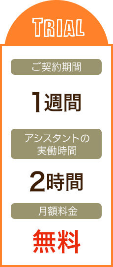
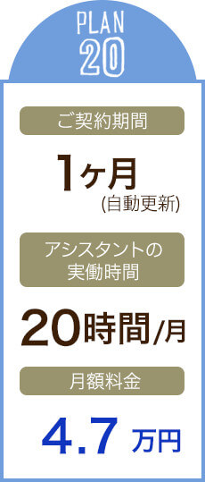
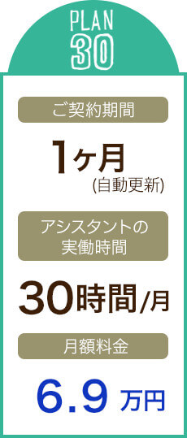
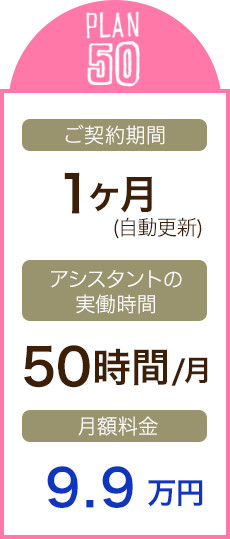

そうだ
フジ子さん
に
頼もう。
必要なときに、必要なだけ仕事を頼めます。
「フジ子さん」は高い実務能力を持つオンラインアシスタントです。
コストのお悩みもぜひご相談ください。
業界水準のおよそ半額
でご提案いたします。
-

遠隔にいるアシスタントに、 “必要な時に必要なだけ” メールや電話で仕事を依頼できます。
-
専門性の高いアシスタントがタスクに応じてチームで対応いたします。
経理、人事、総務、WEB運用など、幅広い業務をお任せいただけます。 -
１か月のみのご利用も大歓迎です。
プランは月額4.7万円からご用意しており、採用・雇用・設備などのコストはかかりません。
人手がほしいのに、社員採用はハードルが高い…。
そんなお悩みはありませんか？
・社員採用や人材派遣は月20万円以上のコストがかかり、気軽に雇えない。
・仕事が無い時は給料を減らしたいが、そうもいかない。
・求人を出しているが、条件に合う候補者から応募がない。
必要な時に必要なだけ頼める「フジ子さん」が、そんなお悩みを解決いたします！
■ オンラインアシスタント「フジ子さん」サービス概要
ハイレベルなアシスタントが、遠隔で業務をサポートいたします
お客様の必要な時に、メール、チャット、お電話で
専門性の高いオンラインアシスタントチームにお仕事をご依頼いただけます。
オンラインアシスタントをもっと身近に。普及価格を実現しました
圧倒的にリーズナブルなプランでアシスタントを起用できるのは「フジ子さん」だけ。
「人手が欲しいけど大きく予算は使えない…」そんなお悩みも強力にバックアップいたします！
持続可能なフルタイム料金で、貴重な社員を事務作業から解放します
どんなに作業の品質が良くても、フルタイムの利用料金が高ければアシスタントの採用を持続できません。
なぜなら、業務量が増えるほどお客様は内製化してコストカットをしたくなるからです。
そうなると、アシスタントでもできる業務を社員にさせたくなり、貴重な社員の時間が事務作業に奪われます。
そのような本末転倒を防ぐべく、「フジ子さん」は持続可能なフルタイムの利用料金体型を最も大切にしています。
■ お客様のよくある悩みを、フジ子さんは解決します
■ オンラインアシスタントに依頼の多い業務
-
経理
◦クラウドツールの導入サポート
◦振込み、支払い代行
◦記帳代行
◦経費精算 etc..経理系アシスタント例
連絡実例
税理士事務所
勤務５年以上 -
秘書／総務
◦備品購入代行
◦出張手配やお店の予約
◦資料作成
◦調べもの、リサーチ業務
◦翻訳、英語メール対応 etc..秘書系アシスタント例
連絡実例
社長秘書職
勤務３年以上 -
人事
◦給料計算
◦求人広告の出稿と管理
◦面接スケジュール調整
◦入社、退職の手続き
◦勤怠管理 etc..人事系アシスタント例
連絡実例
大手企業人事部
勤務５年以上 -
Webサイト運用
◦Webページの編集
◦SNSの運用代行
◦ECサイトの運用代行
◦クラウドソーシングの管理
◦画像の加工、編集 etc..Web系アシスタント例
連絡実例
ECサイト運営職
勤務５年以上

業務量に応じて柔軟にプラン変更や、翌月解約もできるので、人件費の調整弁として、経営リスク軽減目的で導入いただくケースも増えています。(人件費の変動費化)※6
経理も人事も英語もECサイト管理もイラストレーターもできる人材に、パート社員並のコストで仕事を頼めるのはフジ子さんだけ。少数精鋭チームの一員にもぴったりです。
通常、採用予定社員は面接印象で「えいや！」で決め、その後の解雇も難しいですが、フジ子さんなら無料トライアルで実務能力の事前チェックができ、さらに翌月解約もできます。
オンラインアシスタントの導入事例
フジ子さんに頼んでいる仕事は、検討のための調べ物、データ整理やグラフ化などの資料作成、比較調査、経費処理、英語への翻訳、各種予約や手配など、非常に幅広い内容の仕事をお願いしています。 それぞれの仕事の報告時に「次にするべき仕事」も予測して提案し、進めるべきか聞いてくれるので、一度頼めば Yes か No の一言の返信でどんどん仕事が進んでいくので、とてもありがたいです。 その分、私が代表として本来しなければならないマーケティング戦略の検討など、付加価値の高い業務に割く時間が増えました。
優秀なアシスタントがいるからこそ、
生産性の高い仕事に専念できる
日本ではパーソナルアシスタントは贅沢だという風潮もありますが、必要な分だけ頼めるフジ子さんのようなサービスもあるので、生産性を高められる方法は積極的に取り入れ、追求していきたいと考えています。
今は、フジ子さんに To
Doリストを渡すだけでそれらがどんどん自主的に進んで行くので、とても気持ちよく仕事ができています。
Nikon Indonesia
代表取締役社長 浅崎敏夫
■ 安心のセキュリティ
フジ子さんは、最新のセキュリティ技術と徹底した情報管理教育で
お客様の大切な情報をお預かりしています。
-
すべての情報・通信を暗号化
お客様の個人情報・行動情報・社内機密情報など、すべてのデータを暗号化して保存します。
また、256bitSSL方式を採用して金融機関レベルで対応します。 -
人為的な情報漏洩防止
お客様の情報を取り扱う端末は、全て最新のセキュリティソフトを導入しております。
また、外部記録媒体の持ち込みは禁止しており、人為的な情報漏洩を防止しています。
■ オンラインアシスタントの利用料金
- 
- 
- 
- 
※1. 上記費用に別途消費税がかかります。
※2. 契約期間は１か月ごとの自動更新となります。(１か月のみの有期契約をご希望の場合はお申出ください)
※3. 解約には１か月前のご連絡が必要で、連絡日の翌月末日が最短の解約日となります。
※4. お支払いは月毎の前払い制です。お支払いの確認が出来ましたら、アシスタントが業務を開始いたします。
(初回に限り、契約開始日まで日数がない場合、お振込期日を請求書発行日の2営業日後とさせていただきます。)
※5. 月の対応時間を超えて対応する場合、超過料金(時間単価×１.５倍)が
加算されます。(超過作業はお客様の合意のもと行います)
※6. 初回のご請求は、初月(月中開始の場合は日割計算)
と、翌月の２か月分の料金を合算した金額となります。
※7. プラン変更をご希望の際は、前月１０日までにご連絡ください。
※8. 50時間を超えるプランや土日祝日の対応をご希望の際は、別途お見積もりいたします。
※9. プロレベルのデザインやHP制作などをご希望の際は、別途お見積もりいたします。